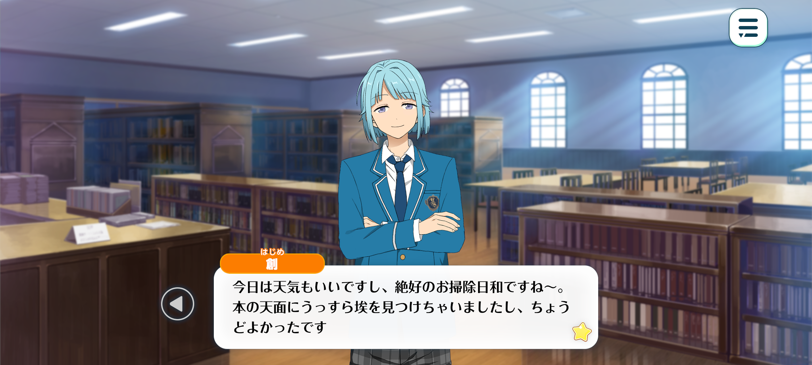
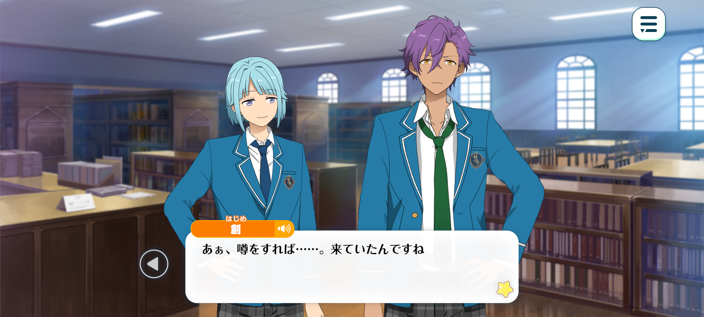

Scout! Dolly Night
Memories Of A Doll – Chapter 7


Time: A few days later

Hajime: ♪~ ♪~
It's such a lovely day today. Perfect for doing a bit of cleaning~. Oh, there's some dust on top of these books. I'd better take care of that.
Otogari-senpai's book is due back today, so I came straight here as soon as the school bell rang…
I wonder if he's finished reading about animism. When we were heading home from the flea market, he said he'd been doing his best and was about halfway through it.
I hope he’s enjoying the book…

Adonis: Excuse me, Shino.
Hajime: Ah, speak of the devil… You’re here.
Adonis: The devil? Have I done something wicked?
Hajime: Ah, no! I was just thinking to myself that today was the day your book was due back. How did you find it?
Adonis: It was good. I managed to finish it with the help of my Japanese dictionary. Although I have to return it now, I found it very interesting.
After seeing how people cared for their belongings at the flea market, I found it much easier to understand the idea of animism as I read.
Hajime: Fufu. Now you've got me curious. I might have to read it myself.
Well then, I'll just go through the procedure for returning the book. Please wait a moment.
Adonis: Ah, thank you.
There's one more thing I'd like to ask you, though.
Hajime: Hm? Something else…?
Adonis: Yes. Actually, I've already decided what I'd like to read next. I'd like to borrow a book about knitting.
Hajime: Animism to knitting…?
Fufu. That almost sounds like a pun.[1] Why the sudden change of interest?
Adonis: No, my interest changed on the day of the flea market.
Animism is the belief that spirits dwell in nature and in objects. It's an idea that people in ancient Japan believed in, too.
I'd been thinking about it throughout the flea market.
Perhaps the spirit that dwells within something is what we humans call the desire to care for it. That affection… Isn't that simply kindness?
Hajime: I see… Well, that might be true.
I sometimes find it hard to part with things I've used for a long time, too. The things I put up for sale were mostly things I hadn't used much, so I wasn't particularly attached to them.
Adonis: I see. So, in a sense, it's people who give things their emotional value. It's humans who give objects their spirits.
Just as my mother found that doll and gave him to me, I think I can entrust something precious to someone else, too.
That's why I'd like to read a book about knitting.
My mother lives far away, so I can't give her anything in return just yet. I thought I'd start by making something for someone close to me.
Though, if I gave Oogami something knitted, he might get angry and complain that it looks uncomfortably hot to wear… ♪
Hajime: Fufu, I see. I think Oogami-senpai would treasure anything you gave him, though…
There are a few books on handicrafts in the library. I'm sure we can find something that suits his tastes.
How about this one, for example? It's about making silver jewellery… ♪
Oogami-senpai usually wears silver, so I think he'd be happy with something like this! ♪
Adonis: That sounds good. As expected of a member of the library committee, you found just the sort of book I wanted to read in no time.
Then I'll borrow both the knitting book and the one about making jewellery. I hope I'll have the chance to thank you properly one day, Shino. I'm not very dextrous, but I'll do my best.
Hajime: Of course. I'll be cheering you on, Otogari-senpai!
This is a little like how I took over from Aoba-senpai as a member of the library committee, and inherited his hopes, too. Otogari-senpai, please keep sharing your wonderful way of thinking with me… ♪
- animism in japanese is animizumu and knitting is amimono